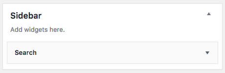
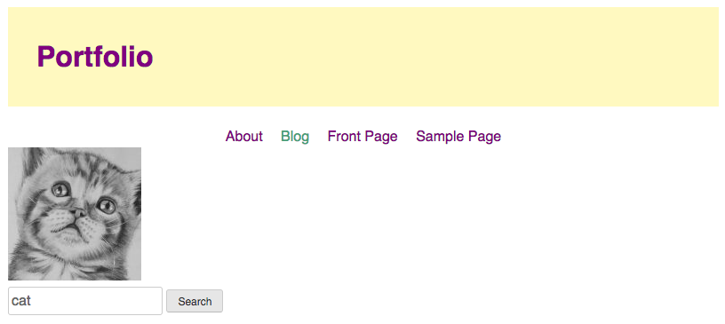

We only have two more template pages to cover: sidebar.php and footer.php. There's not a lot we have to do with these templates but we should go over how they work.
The page, archive and single templates all include a function that loads the sidebar: get_sidebar();. The sidebar is a section of the site where we can add different types of content. Elements such as Menus, Categories, Calendar, Archives, Search, Social Media and many others can be dragged into the dynamic sidebar. These modules are called Widgets and can be found in the Dashboard under the
The sidebar.php template has one simple section that loads the dynamic sidebar. The _s theme template has support for one sidebar, but more can be added in the functions.php template if needed. More info on Sidebars.
<aside id="secondary" class="widget-area" role="complementary">
<?php dynamic_sidebar( 'sidebar-1' ); ?>
</aside><!-- #secondary -->So, for example, if I want to have a search bar for my website, I can add a search section to my Sidebar.
This will appear in the secondary section of my theme, which defaults to appear after the main content. I can use this section to add styles or I could rearrange the order if I want it to appear somewhere else in the portfolio.
By default in the _s theme, the footer closes the outer wrap and content wrap and adds some more WordPress stuff into the bottom of the page. We need to leave that stuff in, but we don't necessarily need the default content that reads
</div><!-- #content -->
<footer id="colophon" class="site-footer" role="contentinfo">
<div class="site-info">
<a href="<?php echo esc_url( __( 'https://wordpress.org/', 'portfolio' ) ); ?>"><?php printf( esc_html__( 'Proudly powered by %s', 'portfolio' ), 'WordPress' ); ?></a>
<span class="sep"> | </span>
<?php printf( esc_html__( 'Theme: %1$s by %2$s.', 'portfolio' ), 'portfolio', '<a href="https://automattic.com/" rel="designer">Underscores.me</a>' ); ?>
</div><!-- .site-info -->
</footer><!-- #colophon -->
</div><!-- #page -->
<?php wp_footer(); ?>
</body>
</html>To add info for you footer, replace the .site-info section. You could use the menu code from header.php with a new menu to add a footer menu, or you add copyright info, social media links or anything else needed